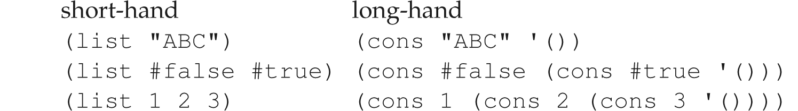
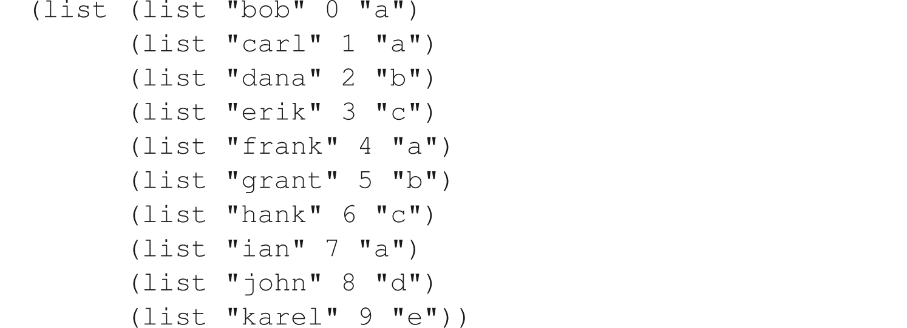
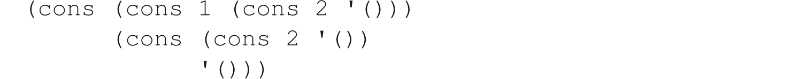

11.1 The list Function
At this point, you should have tired of writing so many conses just to create a list, especially for lists that contain a bunch of values. Fortunately, we have an additional teaching language for you that provides mechanisms for simplifying this part of a programmer’s life. BSL+ does so, too.
You have graduated from BSL. It is time to use the “Language” menu and to select “Beginning Student with List Abbreviations” for your studies.
The key innovation is list, which consumes an arbitrary number of values and creates a list. The simplest way to understand list is to think of it as an abbreviation. Specifically, every expression of the shape
(list exp-1 … exp-n)
stands for a series of n cons expressions:
(cons exp-1 (cons … (cons exp-n '())))
Keep in mind that '() is not an item of the list here, but actually the rest of the list. Here is a table with three examples:

They introduce lists with one, two, and three items, respectively.
Of course, we can apply list not only to values but also to expressions:
> (list (+ 0 1) (+ 1 1))
(list 1 2)
> (list (/ 1 0) (+ 1 1))
/:division by zero
Before the list is constructed, the expressions must be evaluated. If during the evaluation of an expression an error occurs, the list is never formed. In short, list behaves just like any other primitive operation that consumes an arbitrary number of arguments; its result just happens to be a list constructed with conses.
The use of list greatly simplifies the notation for lists with many items and lists that contain lists or structures. Here is an example:
(list 0 1 2 3 4 5 6 7 8 9)
This list contains 10 items and its formation with cons would require 10 uses of cons and one instance of '(). Similarly, the list

requires 11 uses of list, which sharply contrasts with 40 cons and 11 additional uses of '().
Exercise 181. Use list to construct the equivalent of these lists:
1. (cons "a" (cons "b" (cons "c" (cons "d" '()))))
2. (cons (cons 1 (cons 2 '())) '())
3. (cons "a" (cons (cons 1 '()) (cons #false '())))
4. (cons (cons "a" (cons 2 '())) (cons "hello" '()))
Also try your hand at this one:

Start by determining how many items each list and each nested list contains. Use check-expect to express your answers; this ensures that your abbreviations are really the same as the long-hand. 
Exercise 182. Use cons and '() to form the equivalent of these lists:
1. (list 0 1 2 3 4 5)
2. (list (list "he" 0) (list "it" 1) (list "lui" 14))
3. (list 1 (list 1 2) (list 1 2 3))
Use check-expect to express your answers.
Exercise 183. On some occasions lists are formed with cons and list.
1. (cons "a" (list 0 #false))
2. (list (cons 1 (cons 13 '())))
3. (cons (list 1 (list 13 '())) '())
4. (list '() '() (cons 1 '()))
5. (cons "a" (cons (list 1) (list #false '())))
Reformulate each of the following expressions using only cons or only list. Use check-expect to check your answers.
Exercise 184. Determine the values of the following expressions:
1. (list (string=? "a" "b") #false)
2. (list (+ 10 20) (* 10 20) (/ 10 20))
3. (list "dana" "jane" "mary" "laura")
Use check-expect to express your answers.
Exercise 185. You know about first and rest from BSL, but BSL+ comes with even more selectors than that. Determine the values of the following expressions:
1. (first (list 1 2 3))
2. (rest (list 1 2 3))
3. (second (list 1 2 3))
Find out from the documentation whether third and fourth exist.